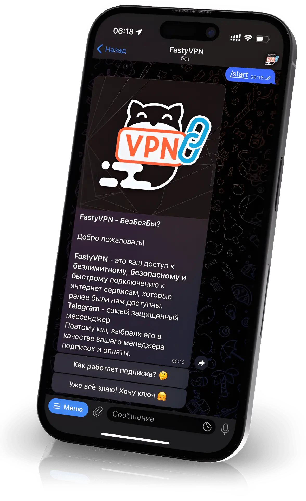

VPN в Вашем Telegram
Самое безопасное решение в защите Вашей конфиденциальности и анонимности стоимостью в 🍫 на 🖐🏻 устройств
Получи VPN БЕСПЛАТНО на 3 дня по промокоду: 3DAYSFREE

Шесть причин использовать FastyVPN
🤗 Управление VPN в привычном месте
Управление сменой страны 🌍, обновление подписки и её отмены происходит в удобном для Вас месте - в Вашем собственном мессенджере!🔒 Гарантия конфиденциальности Telegram
За сохранность ваших данных отвечает доказавший временем Telegram. Эта гарантия относится и к нашему продукту из-за особенности её распространения.🛡 Используется в обходе GCF
Мы используем Xray XTLS Reality, которая более устойчивая и анонимная, плюс в том что эта новая технология, для которой не найдено средство отслеживания.🚀 Без потерь в скорости
Наша разработка равномерно распределяет пользователей на все доступные сервера единожды! Поэтому у Вас не будут сбоев. Подключение всегда будет стабильным!💳 Оплата через Telegram
🙅🏻♂️ Никаких данных о вашей карте мы не узнаем благодаря системе оплаты через Telegram. Только Вы и безопасная оплата Telegram по России и СНГ.😜 Доступность
Стоимость месячной подписки будет составлять лишь 100 ₽ - стоимость одной шоколадки 🍫 при оплате за год
Как это работает?
Тарифы
🔥 Скоростной - от 100 ₽
😍 Бесплатный
💎 Премиальный - от 1 250 ₽
FAQ
- Как отменить подписку 😑🚫 Этого не потребуется
Вы оплачиваете только за период действия подписки (1,3,6,12 месяцев), никаких автоматических списываний. - Почему так дешево 🤔😌 Мы использовали современные технологии для реализации лучшего взаимодействия с пользователем. Нам не требуется обслуживать собственный софт, так как мы используем Telegram в качестве клиента
- Как происходит оплата 🤨Оплата происходит через Telegram с помощью сервиса ЮКасса
- Какие карты принимаются 💳🌎 Все современные банковские карты: Visa, Mastercard, Maestro, Мир, JCB
- У меня не получилось установить 😥
- Не доверяю, вдруг вы кините 😤Вы можете воспользоваться специальным промокодом 3DAYSFREE чтобы Бесплатно опробовать наш VPN сервис и удостоверится в правоте наших слов и заверенных ожиданий
- Какие страны доступны?На данный момент доступны страны: Нидерланды, Турция, США
- Что нужно устанавливать 🙄?
- Откуда стабильность 😑? У других приходится выискивать свободный сервер, А ТУТ НЕТ?После оплаты вам дается ключ на подключение к одному из серверов на постоянную основу. На сервер подключается до 60 человек. Этого более чем хватает чтобы дать всем стабильную и высокую скорость.
- Думаю, вам можно доверять, где тут Бесплатный Промокод 😅?Ваш бесплатный промокод на использование 🦊 FastyVPN на 3 дня: 3DAYSFREE